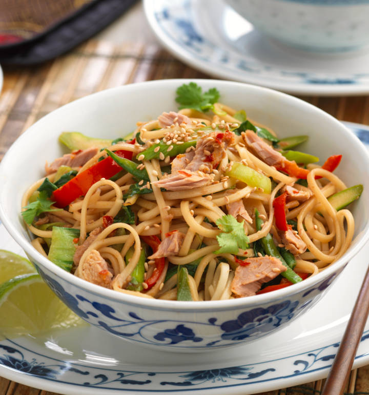

Tuna Stir Fry

Description
Bring the chinese restaurant to your home with this delicious tuna stir fry that is ready in less than 20 minutes.
Ingredients
- 1 tbsp honey
- 4 tbsp soy sauce
- 1 tbsp sunflower oil
- 1 tsp sesame oil (optional)
- 2cm piece fresh carlic, cut into matchsticks
- 2 Garlic Cloves, thinly sliced
- 5 spring onions, shredded
- 5 asparagus spears, sliced
- 1 red pepper, cut into strips
- 1 pok choy
- 10 pieces of mangetout, sliced in half
- 1 pack of John West infusions tuna with chilli and garlic
- 125g dried egg noodles, cooked, refreshed and drained
- 1tsp sesame seeds, lightly tossed
- U1 tbsp fresh coriander, chopped
Method
- In a small bowl mix together the honey and soy sauce and leave to one side.
- Place a wok or large frying pan over a high heat and add the sunflower oil and sesame oil and leave until hot.
- Add the garlic and ginger and fry for 20-30 seconds and then add the spring onions, asparagus, red pepper, pok choy and mangetout and continue cooking for a further minute until the vegetables soften slightly.
- Pour in the soy sauce and honey mixture and add the noodles, continue cooking for another minute and then finally add the chilli and garlic infused tuna and fresh coriander.
- Cook for 20 seconds, give everything a good stir and serve with a scattering of toasted sesame seeds and a little extra coriander. You could also serve some lime wedges on the side for added sharpness.